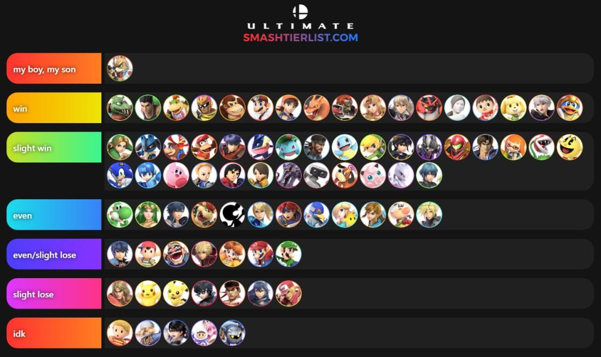
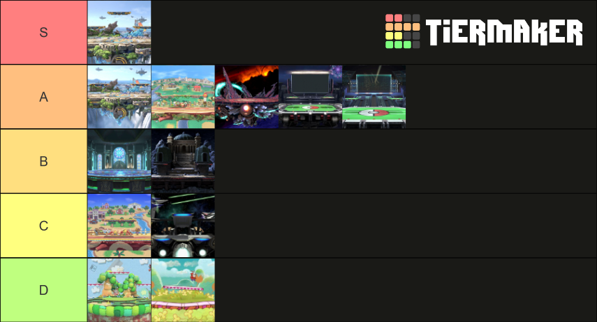
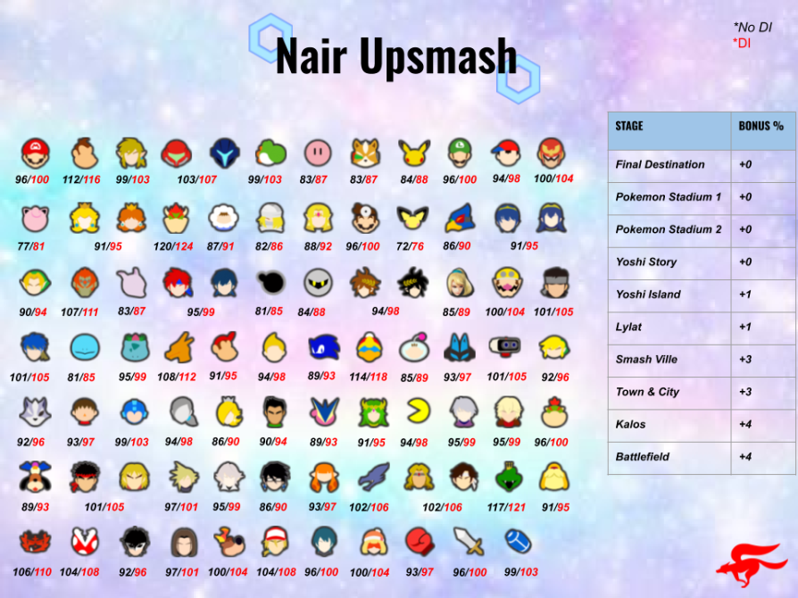
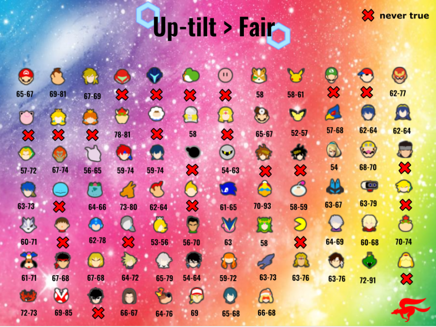

Des sites qui peuvent être utiles :
- Voici les options Out Of Shield de toute les persos mis à jours régulièrement.
- Pour savoir approximativement les bonnes et mauvaises maps de l'adversaire par rapport au MU. Peu fiable mais peut être pratique si vous en avez vraiment aucune idée.
- Ce google Doc indique les pourcentages de kill du nair upsmash en fonction de la blast zone et de la DI. "Tumble" c'est le pourcentage à partir duquel l'adversaire peut être knock down, c'est à dire qu'il peut atterir avec une tech, donc le combo n'est plus 100% true. Vous pouvez le retrouver en dessous dans la section des graphs de Zano
- Un site pour comparer les blastzone
- Savoir si un move est punissable. Attention, il ne prend pas en compte le spacing et prend le cas où l'adversaire rentre le coup à la bonne frame pour que ce soit le plus safe possible. Ce qui fait que parfois un move sera punissable en game et pas théoriquement. Par contre ça veut aussi dire que si il dit que vous pouvez le punir, c'est que peut importe comment l'adversaire met le coup (sauf si il vous outrange) vous pouvez le punir en game.
- Pour connaître les coups qui touchent l’edge
Tier List et MU chart :
- Une tier list par Ryukai 
- Classement des maps pour Fox suite à un débat sur le Foxcord. Pas à jours avec la 10.1 
Les graphs de Zano :
- Un graph de % pour le Nair Upsmash !
- Un autre sur le Uptilt > Fair ce coup-ci ! La DI n'est pas prise en compte. A noter que surtout pour les gros persos c'est avec la hitbox qui touche devant Fox que le Uptilt touche 
Si vous trouvez des erreurs n'hésitez pas à nous contacter !